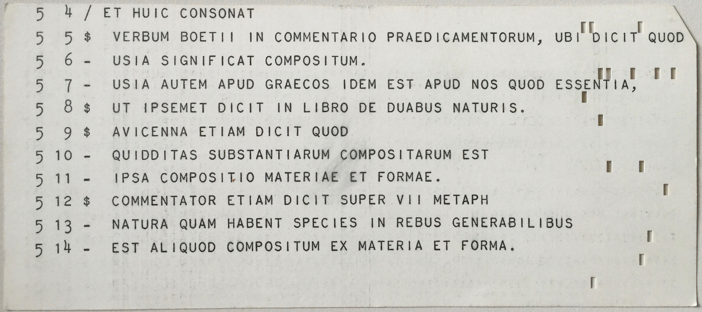
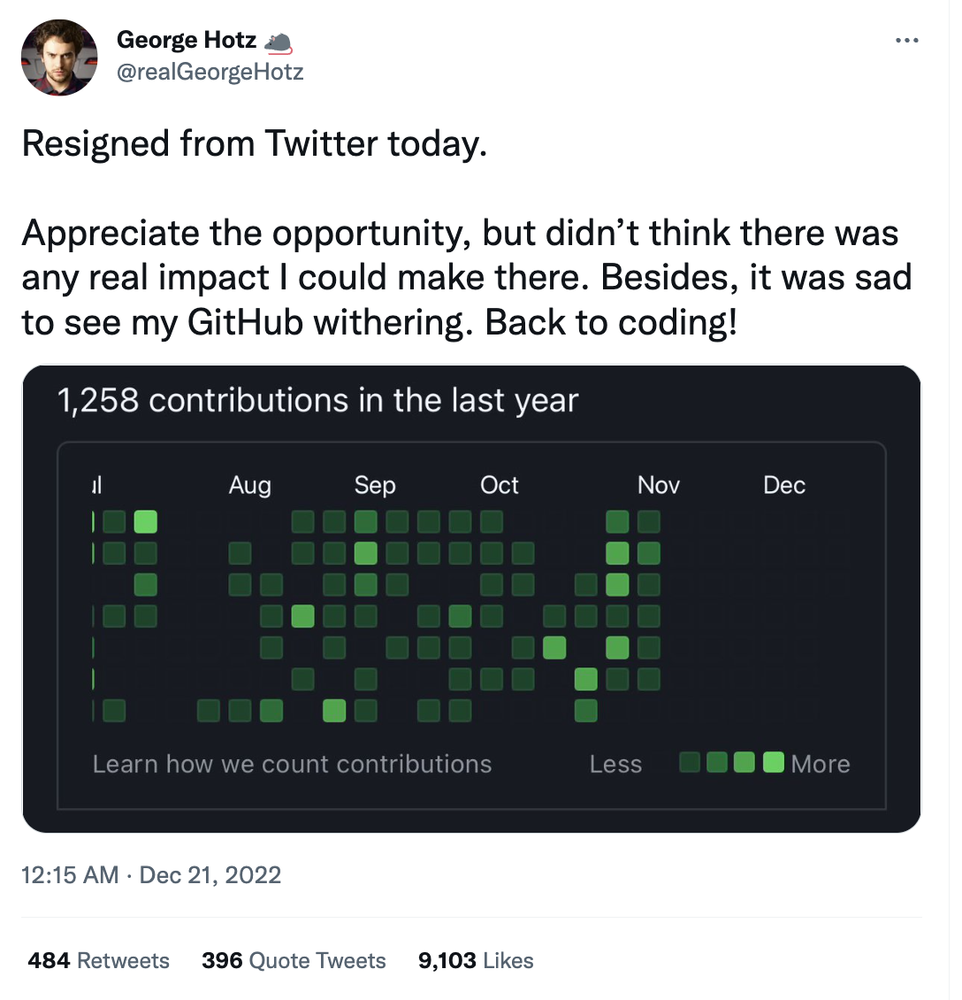
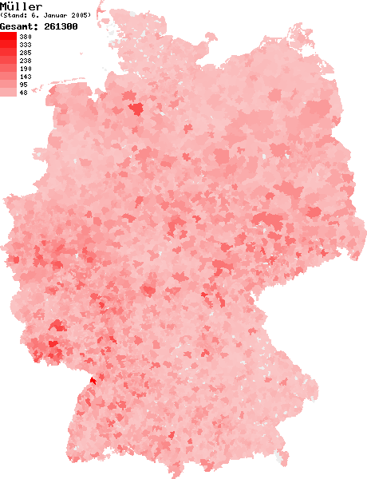
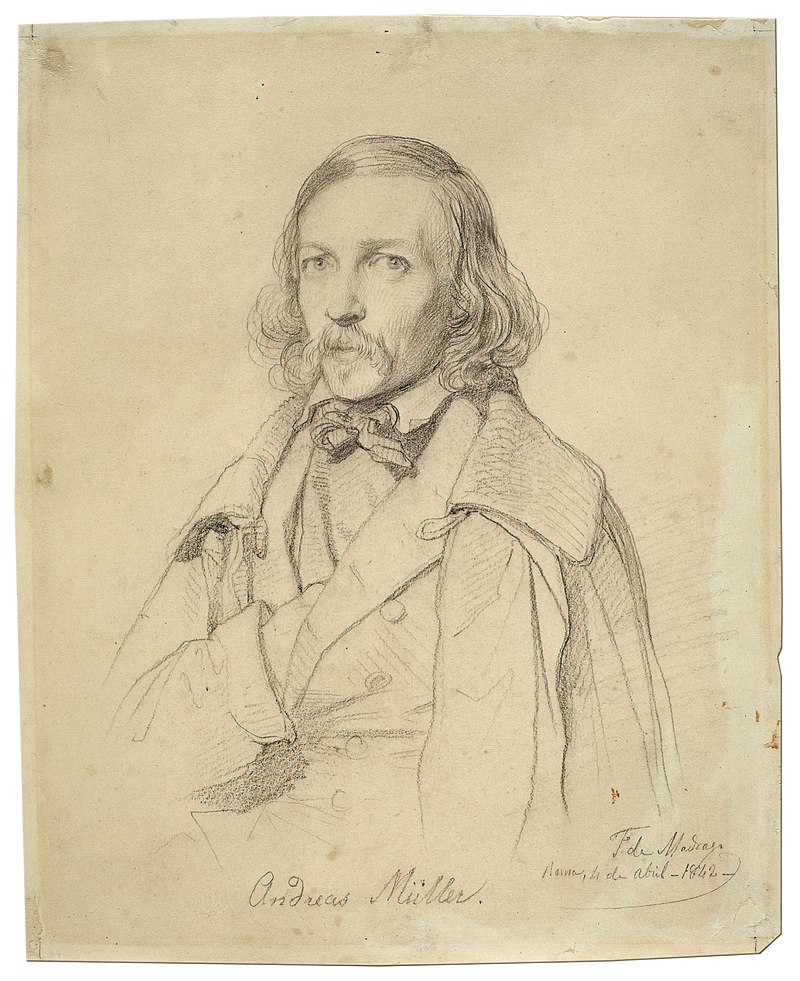
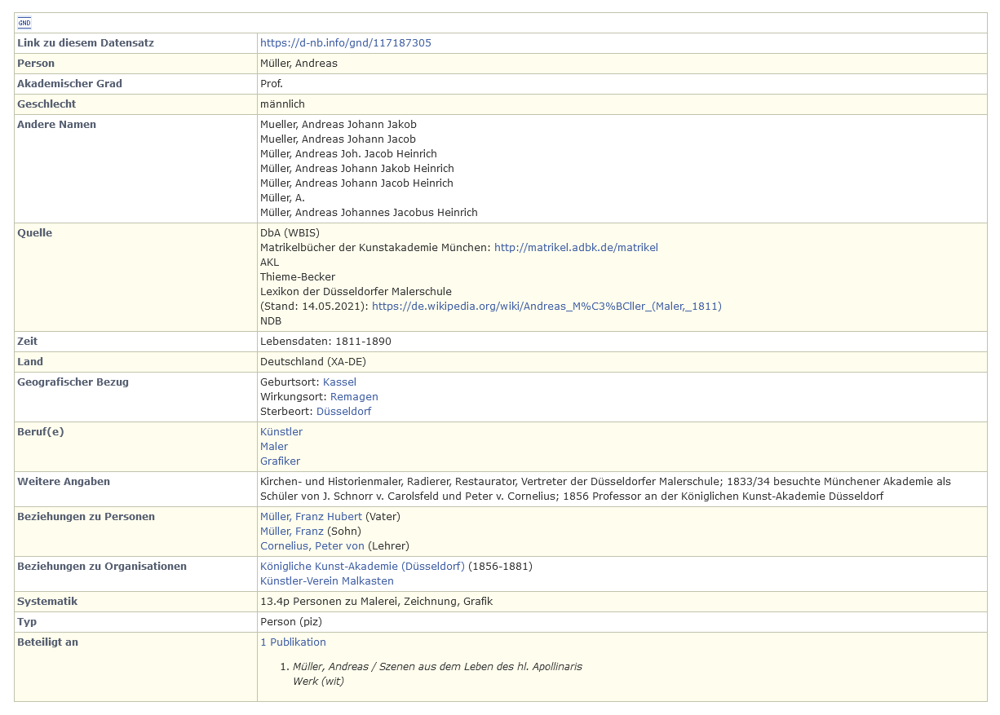

Digital Humanities
Themen
- Vorstellung
- Allgemeine Einführung (Namensdisambiguierung)
- Vertiefung (Digitale Editionen)
- Hands-on (Stanford CoreNLP)
- Ausblick & Kritik
Wer bin ich?
Jonas Müller-Laackman
Referent für Digitale Forschungsdienste
Staats- und Universitätsbibliothek Hamburg
Studium der Arabistik an der Freien Universität Berlin und Universiteit Leiden.
Promotion über libysch-arabische Dichtung in/aus/zu italienischen Konzentrationslagern.
Wissenschaftlicher Mitarbeiter bei der Berlin-Brandenburgischen Akademie der Wissenschaften (TELOTA)
und am Seminar von Semitistik und Arabistik der Freien Universität Berlin.
Allgemeine Einführung
Was sind Digital Humanities?
1946
Der Gründungsmythos: Index Thomisticus

1940-1964
Federalist Papers

1962
Erste Fachkonferenz: The Use of Computers in Anthropology.
1964
Erste Fachzentren und -journale, u.a. das Linguistic Computing Centre in Cambridge.
Ab 1973
Gründung von Fachgesellschaften.
z.B. die Association for Literary and Linguistic Computing, heute European Association for Digital Humanities (EADH).
1960er und 70er
Programmiersprachen und Anwendungssoftware setzen sich durch.
1980er
Etablierung moderner Datenbanksysteme.
Der PC setzt sich durch.
1990er
Das Internet als neue Möglichkeit des Datenaustausches und der Vernetzung.
Zunehmende Bedeutung von GLAM-Institutionen (Galleries, Libraries, Archives, Museums) für digitale Wissensverwaltung.
2004
"Digital Humanities"
(Schreibman, Siemens und Unsworth 2004)
Andere wichtige Entwicklungen
- 1994: Text Encoding Initiative (TEI)
- 1999: Music Encoding Initiative (MEI)
- 2002: Alliance of Digital Humanities Organizations (ADHO)
- 2013: Digital Humanities im deutschsprachigen Raum (DHd)
Okay, ...
... aber was sind denn nun Digital Humanities?
Kurz:
Digital Humanities ist die geisteswissenschaftliche Arbeit mit digitalen Methoden, bei denen diese einen Einfluss auf den Erkenntnisgewinn haben.
Meine eigene ad hoc-Definition :o)Text als Daten
Was heißt das?
Text und Sprache - formell und natürlich
Natürliche Sprache
Wenn du einen Apfel pflücken möchtest, brauchst du einen Apfelbaum.
Formelle Sprache
01010111 01100101 01101110 01101110 00100000 01100100 01110101 00100000 01100101 01101001 01101110 01100101 01101110 00100000 01000001 01110000 01100110 01100101 01101100 00100000 01110000 01100110 01101100 11000011 10111100 01100011 01101011 01100101 01101110 00100000 01101101 11000011 10110110 01100011 01101000 01110100 01100101 01110011 01110100 00101100 00100000 01100010 01110010 01100001 01110101 01100011 01101000 01110011 01110100 00100000 01100100 01110101 00100000 01100101 01101001 01101110 01100101 01101110 00100000 01000001 01110000 01100110 01100101 01101100 01100010 01100001 01110101 01101101 00101110
if (you.wantToPick('apple')) {
require(tree('apple'));
}
Ich habe ein Brett vor'm Kopf.
Mensch vs. Maschine: Mensch
Mensch vs. Maschine: Maschine
Text als Daten zu verstehen...
...heißt ein Verständnis dafür zu entwickeln, wie die maschinelle Interpretation von Texten aussieht.
Warum das Ganze?
Heißt das, dass ich programmieren können muss?
Nein. Oder: Das kommt darauf an...
Coding vs. Software Engineering

Digital Humanities in der Forschungspraxis
Kurz:
Ein Verständnis für den Unterschied zwischen formeller und natürlicher Sprache sowie für Text als Daten ist Grundvoraussetzung. Alles andere ist je nach Forschungsprojekt optional.
Beispiel I: Namensdisamiguierung und Normdaten
Namensdisambiguierung I
Andreas Müller
"Ach der!"
Namensdisambiguierung II
عبدالله المصري
"Klar, kenn ich!"
Beispiel
Herr Müller ging eines Morgens aus seinem Haus in Remagen, um zur Arbeit zu gehen.
Wer ist Herr Müller?

Was jetzt?
Wir haben einen Haufen an Quellen, in denen dieser Herr Müller beschrieben wird, aber wer ist er?
Ein Hinweis!
Herr Müller ist offenbar 1811 in Kassel geboren und hat etwas mit Malerei zu tun.
Wir haben ihn: Andreas Müller (1811-1890)

Was hat das jetzt mit DH zu tun?
Exkurs: Normdaten
Normdaten sind Einträge mit Metadaten zu Entitäten, um diese eindeutig zu beschreiben.
Es gibt die Gemeinsame Deutsche Normdatei (GND), Wikidata und viele andere.
Jeder Eintrag hat eine persistente ID.
Eintrag von unserem Andreas Müller

Ja und wo ist da DH?
Remember: Wir arbeiten mit Text als Daten!
Entitätenerkennung und -disambiguierung ist ein zentraler Teil davon!
Anderes Beispiel: historische arabische Namen
Remember عبدالله المصري?
Bestandteile arabischer Namen
- كنية: Tekonym oder Epitheton, z.B. أبو
- اسم: Vorname, z.B. أحمد
- لقب: Namenszusatz, z.B. الدين
- نسب: Persönliche Abstammung, z.B. بن
- نسبة: Örtliche oder tribale Abstammung, z.B. السنوسي
Fallbeispiel
Wir haben ein Verzeichnis von >1500 historischen arabischen Namen.
Wer waren diese Menschen?
Die Lösung
Eine maschinelle Untersuchung der Namensstruktur kann Rückschluss geben über örtliche und tribale Herkunft, familiäre Abstammung, Nachfahren, Tätigkeit, Ansehen, uvm.
Wäre unser عبدالله المصري also im Jahre 800H geboren, würde er vermutlich (!) einen Bezug zu مصر haben.
Aber was ist mit fehlerhaften Daten?
... guter Punkt!
Pre-Processing, Awareness und Aufbereitung
Aufbereitung und Bereinigen von Daten ist grundlegender Teil der Arbeit mit Daten
Stetige Reflexion über Vollständigkeit, Art und Qualität der Daten ist essenziell.
... darauf kommen wir später zurück.
Fazit: Einführung
Ein wichtiger Teil von Digital Humanities ist die Arbeit mit Daten. Texte etwa werden als Daten maschinell analysier- und interpretierbar. Damit können Forschungsprozesse optimiert werden, die ohne digitale Unterstützung viel Zeit in Anspruch nehmen würden, oder Erkenntnisse gewonnen werden, die analog gar nicht möglich gewesen wären.
Fragen?
Und dann: 10 Minunten Kaffeepause!
Vertiefung
Methoden in den Digital Humanities
Technologien der Textannotation
Beispiel II: Digitale Editionen
Hands-On: Stanford CoreNLP
Ausblick
Kritik
The Computational Case against Computational Literary Studies (Nan Z. Da)